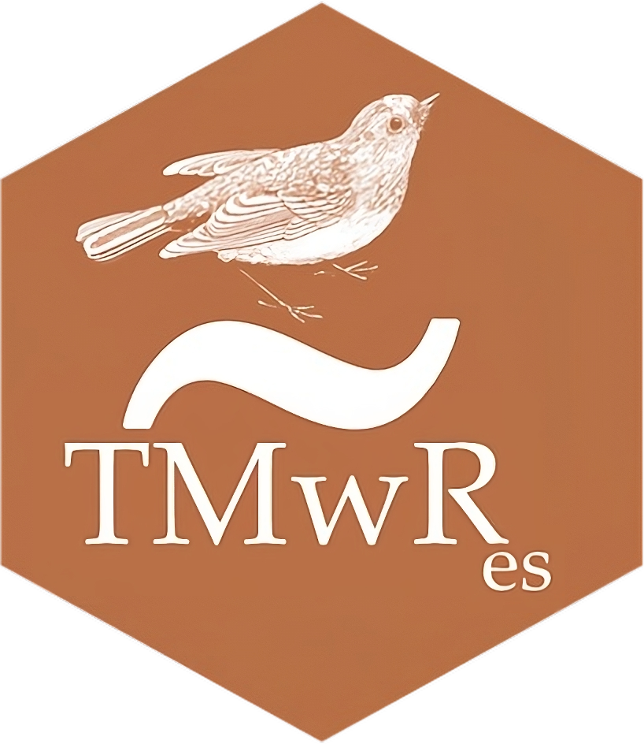

Este libro se escribió abiertamente y varias personas contribuyeron a través de solicitudes de extracción o problemas. Un agradecimiento especial para las thirty-eight personas que contribuyeron a través de pull requests de GitHub (en orden alfabético por nombre de usuario): @arisp99, Brad Hill (@bradisbrad), Bryce Roney (@bryceroney), Cedric Batailler (@cedricbatailler), Ildikó Czeller (@czeildi), David Kane (@davidkane9), @DavZim, @DCharIAA, Emil Hvitfeldt (@EmilHvitfeldt), Emilio (@emilopezcano), Fgazzelloni (@Fgazzelloni), Hannah Frick (@hfrick), Hlynur (@hlynurhallgrims), Howard Baek (@howardbaek), Jae Yeon Kim (@jaeyk), Jonathan D. Trattner (@jdtrat), Jeffrey Girard (@jmgirard), John W Pickering (@JohnPickering), Jon Harmon (@jonthegeek), Joseph B. Rickert (@joseph-rickert), Maximilian Rohde (@maxdrohde), Michael Grund (@michaelgrund), @MikeJohnPage, Mine Cetinkaya-Rundel (@mine-cetinkaya-rundel), Mohammed Hamdy (@mmhamdy), @nattalides, Y. Yu (@PursuitOfDataScience), Riaz Hedayati (@riazhedayati), Rob Wiederstein (@RobWiederstein), Scott (@scottyd22), Simon Schölzel (@simonschoe), Simon Sayz (@tagasimon), @thrkng, Tanner Stauss (@tmstauss), Tony ElHabr (@tonyelhabr), Dmitry Zotikov (@x1o), Xiaochi (@xiaochi-liu), Zach Bogart (@zachbogart).
Modelado Ordenado con R
Hola Mundo

¡Bienvenido a Tidy Modeling con R! Este libro es una guía para utilizar una colección de software en el lenguaje de programación R para la construcción de modelos llamada tidymodels y tiene dos objetivos principales:
En primer lugar, este libro proporciona una introducción práctica a cómo usar estos paquetes de R específicos para crear modelos. Nos centramos en un dialecto de R llamado tidyverse que son un conjunto de paquetes diseñados con una filosofía consistente y centrada en el ser humano, y demostramos los paquetes que forman parte de tidyverse y tidymodels se pueden utilizar para producir modelos estadísticos y de aprendizaje automático de alta calidad.
En segundo lugar, este libro le mostrará cómo desarrollar buenas metodologías y prácticas estadísticas. Siempre que sea posible, nuestro software, documentación y otros materiales intentan evitar errores comunes.
En el Capítulo 1, describimos una taxonomía para modelos y destacamos cómo es un buen software para modelado. Las ideas y la sintaxis del tidyverse, que presentamos (o revisamos) en el Capítulo 2, son la base del enfoque de tidymodels para estos desafíos de metodología y práctica. El Capítulo 3 proporciona un recorrido rápido por las funciones de modelado convencionales de R base y resume las necesidades no satisfechas en esa área.
Después de eso, este libro se divide en partes, comenzando con los conceptos básicos del modelado con principios de datos ordenados. Los capítulos 4 a 9 presentan un conjunto de datos de ejemplo sobre los precios de la vivienda y demuestran cómo utilizar los paquetes fundamentales de tidymodels: recipes, parsnip, workflows, yardstick y otros.
La siguiente parte del libro avanza con más detalles sobre el proceso de creación de un modelo eficaz. Los capítulos 10 a 15 se centran en crear buenas estimaciones de rendimiento, así como en ajustar los hiperparámetros del modelo.
Finalmente, la última sección de este libro, Capítulos 16 a 21, cubre otros temas importantes para la construcción de modelos. Analizamos enfoques de ingeniería de características más avanzados, como la reducción de dimensionalidad y la codificación de predictores de alta cardinalidad, así como también cómo responder preguntas sobre por qué un modelo hace ciertas predicciones y cuándo confiar en las predicciones de su modelo.
No asumimos que los lectores tengan una amplia experiencia en la construcción de modelos y estadísticas. Se requieren algunos conocimientos estadísticos, como muestreo aleatorio, varianza, correlación, regresión lineal básica y otros temas que generalmente se encuentran en un curso básico de estadística o análisis de datos de pregrado. Suponemos que el lector está al menos ligeramente familiarizado con dplyr, ggplot2 y el operador “pipe” %>% en R, y que está interesado en aplicar estas herramientas al modelado. Para los usuarios que aún no tienen estos conocimientos básicos de R, recomendamos libros como R for Data Science de Wickham y Grolemund (2016). La investigación y el análisis de datos son una parte importante de cualquier proceso de modelo.
Este libro no pretende ser una referencia exhaustiva sobre técnicas de modelado; sugerimos otros recursos para aprender más sobre los propios métodos estadísticos. Para obtener información general sobre el tipo de modelo más común, el modelo lineal, sugerimos Fox (2008). Para modelos predictivos, Kuhn y Johnson (2013) y Kuhn y Johnson (2020) son buenos recursos. Para los métodos de aprendizaje automático, Goodfellow, Bengio, y Courville (2016) es una fuente de información excelente (pero formal). En algunos casos, describimos los modelos que utilizamos con cierto detalle, pero de una manera menos matemática y, con suerte, más intuitiva.
Reconocimientos
Estamos muy agradecidos por las contribuciones, la ayuda y las perspectivas de las personas que nos han apoyado en este proyecto. Hay varios a los que nos gustaría agradecer en particular.
Nos gustaría agradecer a nuestros colegas de RStudio en el equipo tidymodels (Davis Vaughan, Hannah Frick, Emil Hvitfeldt y Simon Couch), así como al resto de nuestros compañeros de trabajo en el equipo de código abierto de RStudio. Gracias a Desirée De Leon por el diseño del sitio del trabajo en línea. También nos gustaría agradecer a nuestros revisores técnicos, Chelsea Parlett-Pelleriti y Dan Simpson, por sus comentarios detallados y perspicaces que mejoraron sustancialmente este libro, así como a nuestros editores, Nicole Tache y Rita Fernando, por su perspectiva y orientación durante el proceso. de escritura y publicación.
Usando ejemplos de código
Este libro fue escrito con RStudio usando bookdown. El sito web está alojado a través de Netlify, y construido automáticamente después de cada push por GitHub Actions. La fuente completa está disponible en GitHub. Generamos todos los gráficos de este libro usando ggplot2 y su tema blanco y negro (theme_bw()).
Esta versión del libro fue construida con R version 4.3.1 (2023-06-16 ucrt), pandoc versión 3.1.1, y los siguientes paquetes: applicable (0.1.0, CRAN), av (0.8.5, CRAN), baguette (1.0.1, CRAN), beans (0.1.0, CRAN), bestNormalize (1.9.1, CRAN), bookdown (0.35, CRAN), broom (1.0.5, CRAN), censored (0.2.0, CRAN), corrplot (0.92, CRAN), corrr (0.4.4, CRAN), Cubist (0.4.2.1, CRAN), DALEXtra (2.3.0, CRAN), dials (1.2.0, CRAN), dimRed (0.2.6, CRAN), discrim (1.0.1, CRAN), doMC (1.3.5, R-Forge), dplyr (1.1.3, CRAN), earth (5.3.2, CRAN), embed (1.1.2, CRAN), fastICA (1.2-3, CRAN), finetune (1.1.0, CRAN), forcats (1.0.0, CRAN), ggforce (0.4.1, CRAN), ggplot2 (3.4.3, CRAN), glmnet (4.1-8, CRAN), gridExtra (2.3, CRAN), infer (1.0.5, CRAN), kableExtra (1.3.4, CRAN), kernlab (0.9-32, CRAN), kknn (1.3.1, CRAN), klaR (1.7-2, CRAN), knitr (1.44, CRAN), learntidymodels (0.0.0.9001, Github), lime (0.5.3, CRAN), lme4 (1.1-34, CRAN), lubridate (1.9.3, CRAN), mda (0.5-4, CRAN), mixOmics (6.24.0, Bioconductor), modeldata (1.2.0, CRAN), multilevelmod (1.0.0, CRAN), nlme (3.1-162, CRAN), nnet (7.3-19, CRAN), parsnip (1.1.1, CRAN), patchwork (1.1.3, CRAN), pillar (1.9.0, CRAN), poissonreg (1.0.1, CRAN), prettyunits (1.2.0, CRAN), probably (1.0.2, CRAN), pscl (1.5.5.1, CRAN), purrr (1.0.2, CRAN), ranger (0.15.1, CRAN), recipes (1.0.8, CRAN), rlang (1.1.1, CRAN), rmarkdown (2.25, CRAN), rpart (4.1.19, CRAN), rsample (1.2.0, CRAN), rstanarm (2.26.1, CRAN), rules (1.0.2, CRAN), sessioninfo (1.2.2, CRAN), stacks (1.0.2, CRAN), stringr (1.5.0, CRAN), svglite (2.1.1, CRAN), text2vec (0.6.3, CRAN), textrecipes (1.0.4, CRAN), themis (1.0.2, CRAN), tibble (3.2.1, CRAN), tidymodels (1.1.1, CRAN), tidyposterior (1.0.0, CRAN), tidyverse (2.0.0, CRAN), tune (1.1.2, CRAN), uwot (0.1.16, CRAN), workflows (1.1.3, CRAN), workflowsets (1.0.1, CRAN), xgboost (1.7.5.1, CRAN), and yardstick (1.2.0, CRAN).
Sobre la traducción
 Esta traducción de “Modelado Ordenado con R” es un proyecto personal de David Díaz Rodríguez con el objetivo de facilitar el estudio de construcción de modelos mediante el uso de R, tanto al propio traductor como a todas aquellas personas de habla hispana que deseen aprender sobre este tema.
Señalar que esta es una traducción textual del libro por lo que cuando los autores se refieren así mismo en primera persona, serán Max Kuhn & Julia Slige no el traductor.
La traducción fue realizada usando Google Translate y fueron corregidos algunos errores gramaticales y de coherencia. Si detecta algún error relacionado con el contenido de la traducción, siéntase libre de abrir un issue o un pull request en este repositorio.